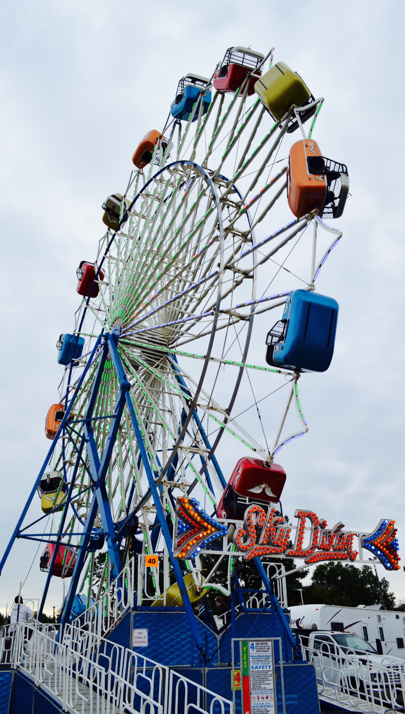

    <section id="activities" class="bg-light-gray">
        <div class="container">
            <div class="row">
                <div class="col-md-8">
                    <div class="row text-center">
                        <div class="col-md-12 text-center">
                            <h2 class="section-heading">Activities around Raleigh</h2>
                        </div>
                    </div>
                    <div class="col-md-10 col-md-offset-1">
                        <h4>Museums and Parks</h4>
                        <p><a href="https://ncartmuseum.org/">NC Museum of Art</a> - Great museum and a nice park to go for
a walk.</p>
                        <p><a href="https://www.raleighnc.gov/parks/content/ParksRec/Articles/Parks/Durant.html">Durant
   Nature Preserve</a> - The park where we are getting married has a few trails and a great
playground for kids.</p>
                        <p><a href="https://www.marbleskidsmuseum.org/">Marbles Kids Museum</a> -
                            Great kids museum with a 3D theater.</p>
                        <h4>Temporary Attractions</h4>
                        <p><a href="http://www.ncstatefair.org/2018/index.htm">NC State Fair</a> - The fair will be going on
the weekend of our wedding. Lots of rides, food, farm animals, farm equipment, and crafts.
</p>
                        <h4>Our Favorites in Downtown Raleigh</h4>
                        <p>Bittersweet - Great desserts and cocktails to pair with them.</p>
                        <p>MOFU - great place to eat.</p>
                        <p>BoxCar - awesome barcade! Arcade games and a bar. Free popcorn and
                            water.</p>
                        <h4>Breweries</h4>


                        <p><a href="https://www.bondbrothersbeer.com/">Bond Brothers</a> - This is our favorite, but it's located in Cary. They are
                            always switching up the beers they are brewing.</p>
                        <p><a href="https://www.raleighbrewing.com/">Raleigh Brewing Company</a> - One of the older breweries. This is where we had
                            our first date.</p>
                        <p><a href="http://www.compassrosebrewery.com/">Compass Rose</a> - super close to the
                            wedding venue. We've gone twice and liked it both times.</p>
                        <p><a href="http://www.bigbossbrewing.com/">Big Boss Brewing Co</a> - one of the first craft breweries in the area. They
                            have ping pong tables.</p>
                        <p><a href="http://www.lynnwoodbrewing.beer/wp/">Lynnwood Brewing Concern</a> - Great brewery with a large outdoor space.</p>

                    </div>
                </div>
                <div class="col-md-4 pic">
                    
                </div>
            </div>
        </div>
    </section>